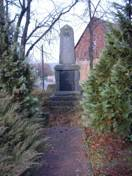
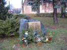
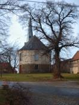
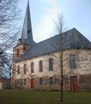
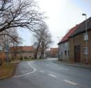
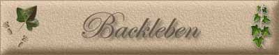

|
|
|
 Kriegerdenkmal 
 Kirche Chorseitig  Kirche Backleben  Backleben – Hauptstraße |

Das Dorf wird urkundlich erstmals im Jahre 1160 erwähnt. Damals verschenkte ein Grundherr mit Namen Adelbero Land zu „Backeleiben“ an das Kloster Hersfeld. Abgeleitet von der Namensbildung dürfte Backleben eine Gründung der Völkerwanderungszeit sein. Orte mit „-leben“ werden dabei gern als Siedlungen der jüdländischen Stämme ( Angeln, Warnen) angesehen. Die Bedeutung des Ortsnamens wird sicher, wie bei vergleichbaren Ortsnamen auch, als „Besitz (Erbgut) eines Mannes mit Namen Backo“ erklärbar sein. Als weltliche Herren des Dorfes erscheinen im Hochmittelalter die Beichlinger Grafen, die schuldenhalber 1457 Backleben an die Grafen von Stolberg und von Schwarzburg verkauften. Seit 1469 besaßen die Stolberger Grafen den Ort allein und 1505 kam Backleben mit anderen Dörfern der Umgebung in den Besitz der Herren von Werthern (Wiehe), die das Dorf in ihre Herrschaft Frohndorf eingliederten. Kirchlich war Backleben lange Zeit Großmonra und damit dem Mainzer Peterstift zugeordnet, das wohl neben dem Ort auch die Kirche erbauen ließ, die dem Heiligen Severinus geweiht wurde. Die Feldflur des Ortes ist fruchtbar und wasserreich. Stets bildete der Ackerbau die Grundlage für das Leben der Einwohner. Mehrere Wassermühlen beim Dorf zeugen davon, dass hier einst auch für benachbarte Siedlungen Getreide gemahlen wurde. Auch Weinanbau an den Hängen nördlich vom Ort hatte zeitweise Bedeutung, ebenso der Obstanbau und die Viehwirtschaft.
|